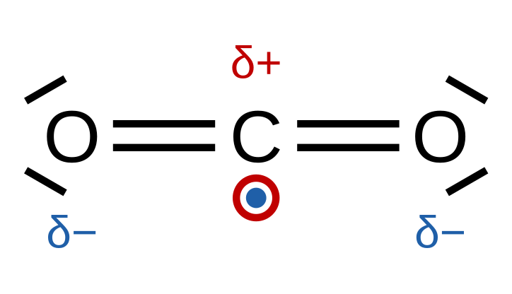
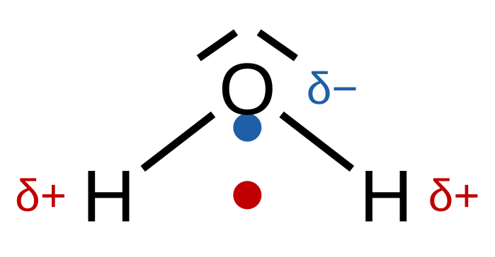
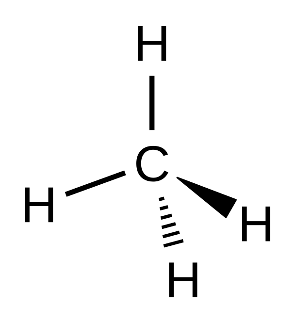

So nutzen Sie die Hilfen: Versuchen Sie es erst allein. Öffnen Sie dann Hilfe 1, danach Hilfe 2. Die Lösung dient zur Kontrolle – vergleichen Sie sie mit Ihrer eigenen Antwort und verbessern Sie diese.
Aufgabe 1: Wasser flüssig – CO₂ gasförmig
Zeichnen, ermitteln und erklären Sie!
Hilfe 1
CO₂ ist linear (zwei Doppelbindungen am C), H₂O gewinkelt (zwei freie Paare am O). Welches Molekül ist ein Dipol? (vgl. Arbeitsblatt 9)
Hilfe 2
Entscheidungsschema (Abb. 6): 1. Polare Bindungen? nein → nur LDW. 2. Dipolmolekül? nein → nur LDW. 3. H an N, O oder F gebunden? ja → Wasserstoffbrücken, nein → Dipol-Dipol-WW. LDW wirken immer zusätzlich.
Hilfe 3
Je stärker die Anziehung zwischen den Molekülen, desto mehr Energie braucht man, um sie voneinander zu trennen (Sieden).
Lösung (erst nach eigenem Versuch öffnen!)


Aufgabe 2: Halogene
Erklären Sie die steigenden Siedetemperaturen!
Hilfe 1
Sind Halogen-Moleküle (F₂, Cl₂ …) polar? Welche Wechselwirkung bleibt dann übrig?
Hilfe 2
Was ändert sich von F₂ zu I₂ an der Zahl der Elektronen? Wie wirkt sich das auf die Stärke der LDW aus?
Lösung (erst nach eigenem Versuch öffnen!)
Unpolare Moleküle → nur LDW. Von F₂ zu I₂ mehr Elektronen, größere Moleküle → stärkere LDW → höhere Siedetemperatur.
Aufgabe 3: HCl und F₂
Begründen Sie die höhere Siedetemperatur von HCl!
Hilfe 1
Gleiche Elektronenzahl bedeutet: Die LDW sind ungefähr gleich stark. Was hat HCl zusätzlich?
Hilfe 2
Berechnen Sie ΔEN für H–Cl und für F–F.
Lösung (erst nach eigenem Versuch öffnen!)
LDW ähnlich (gleiche Elektronenzahl). HCl ist ein Dipol (ΔEN = 1,0) → zusätzlich Dipol-Dipol-WW; F₂ unpolar → nur LDW. Stärkere Anziehung → höhere Siedetemperatur von HCl.
Aufgabe 4: Ammoniak und Methan
Zeichnen Sie die Raumformeln und erklären Sie!
Hilfe 1
NH₃: ein freies Paar am N → trigonal-pyramidal. CH₄: vier Bindungen → tetraedrisch.
Hilfe 2
ΔEN: N–H = 0,8 (polar), C–H = 0,4 (praktisch unpolar). Gehen Sie dann das Entscheidungsschema durch.
Lösung (erst nach eigenem Versuch öffnen!)


Aufgabe 5: Siedetemperaturen der Wasserstoffverbindungen
Erklären Sie a) den Trend der IV. Hauptgruppe und b) die Ausreißer H₂O, HF, NH₃!
Hilfe 1
a) CH₄, SiH₄, GeH₄, SnH₄ sind alle tetraedrisch und unpolar. Welche Wechselwirkung wirkt, und wie hängt sie von der Molekülgröße ab?
Hilfe 2
b) Bei welchen Molekülen ist ein H-Atom an ein N-, O- oder F-Atom gebunden?
Lösung (erst nach eigenem Versuch öffnen!)
a) Nur LDW, die mit der Molekülgröße zunehmen → steigende Siedetemperatur. b) H₂O, HF, NH₃ bilden Wasserstoffbrücken (H an O, F, N) → deutlich höhere Siedetemperaturen als nach dem Trend erwartet.
Aufgabe 6 (★ Wahl): Siedetemperaturen zuordnen
Ordnen Sie zu und begründen Sie!
Hilfe 1
Ein Stoff ist ein Salz – welcher? Salze haben sehr hohe Siedetemperaturen.
Hilfe 2
Sortieren Sie die molekularen Stoffe: nur LDW (F₂, CF₄) < Dipol-Dipol (HCl) < Wasserstoffbrücken (HF). CF₄ hat mehr Elektronen als F₂.
Lösung (erst nach eigenem Versuch öffnen!)
F₂ −188 °C · CF₄ −128 °C · HCl −85 °C · HF 20 °C · MgF₂ 2227 °C (Salz, Ionenbindung)
📱 Weiter üben: App „BioChemie FOS BOS Würzburg“ → Molekulare Stoffe → Zwischenmolekulare Wechselwirkungen